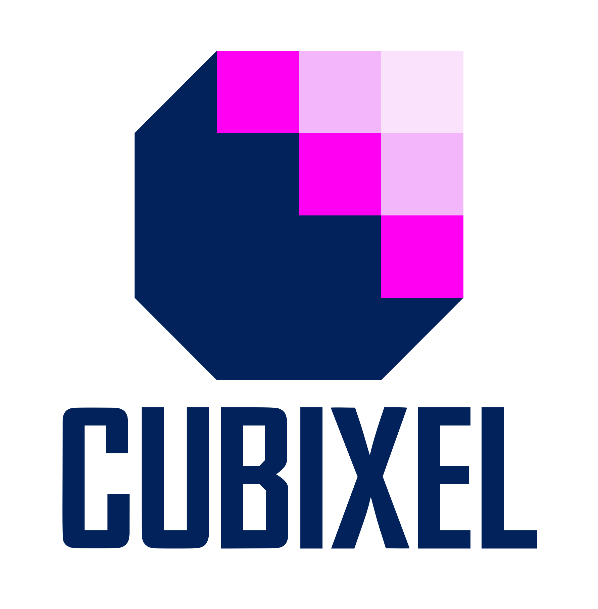

Quality Assurance
The CUBIXEL company prides itself on its ability to provide quality assurance as a means to ensure a high level of quality in production during the development of products or services.
The CUBIXEL Quality Assurance Manual provides an understanding of what the CUBIXEL company values and what it represents. It details the corporate structure of CUBIXEL and information regarding the responsibilities of each role within our development team. Our QA Manual serves as a reference for how the company's software engineering projects should run, providing details on many aspects of CUBIXEL’s particular approach to project management; we regularly update our QA Manual to reflect the dynamic and continually improving nature of the company.
-

Quality Assurance Manual